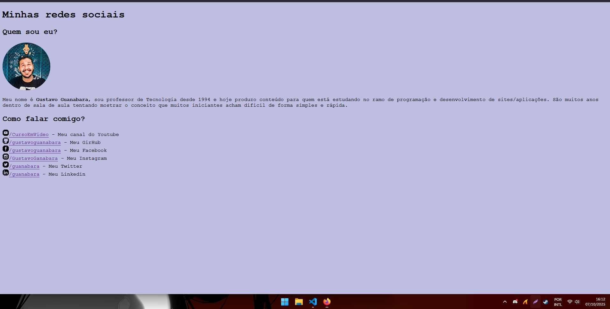
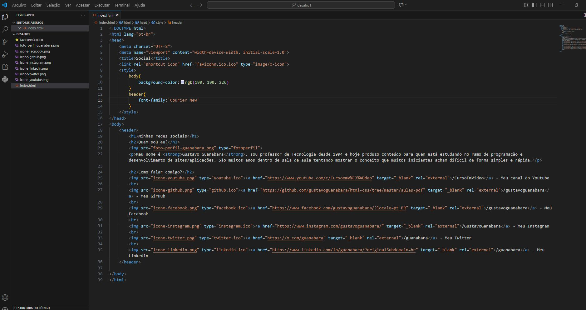

Como podem observar, aqui consta o meu primeiro projeto realizado me baseando nas aulas do curso do Gustavo Guanabara, na criação e estilização de um site voltado para mostrar a experiência profissional e seus objetivos. Como podem ver, utilizei do HTML para criar o corpo do site, e o CSS para estilizar, usando tags semânticas e classes para facilitar a modificação do site. Nessa aplição eu havia optado por utilizar o CSS por dentro do HTML, pois ainda não sabia usar o externo corretamente, mas o resultado ainda foi super satisfatório!
 Clique aqui para voltar para a página inicial